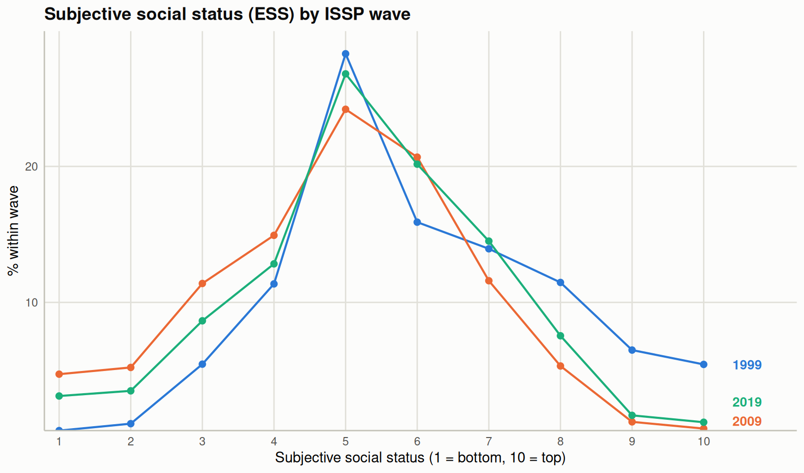
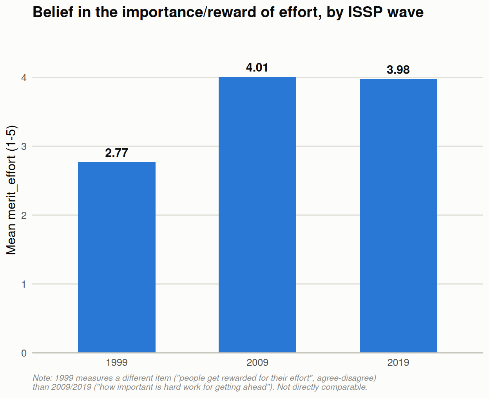

db_proc99$rincomer <-set_na(db_proc99$rincomer, na =c(97,98,99), drop.levels = F) # there is a decil 0; those no income no labor forcedb_proc99$income_decil <-as.numeric(db_proc99$rincomer)frq(db_proc99$income_decil)
Q1a Getting ahead: How important is coming from a wealthy family? (x) <numeric>
# total N=56021 valid N=54876 mean=2.91 sd=1.16
Value | Label | N | Raw % | Valid % | Cum. %
---------------------------------------------------------------
1 | Not important at all | 6675 | 11.92 | 12.16 | 12.16
2 | Not very important | 14609 | 26.08 | 26.62 | 38.79
3 | Fairly important | 15782 | 28.17 | 28.76 | 67.55
4 | Very important | 12554 | 22.41 | 22.88 | 90.42
5 | Essential | 5256 | 9.38 | 9.58 | 100.00
<NA> | <NA> | 1145 | 2.04 | <NA> | <NA>
Código
frq(db_proc09$nmerit_contacts)
Q1f Getting ahead: How important is knowing the right people? (x) <numeric>
# total N=56021 valid N=54966 mean=3.56 sd=1.01
Value | Label | N | Raw % | Valid % | Cum. %
---------------------------------------------------------------
1 | Not important at all | 1622 | 2.90 | 2.95 | 2.95
2 | Not very important | 6379 | 11.39 | 11.61 | 14.56
3 | Fairly important | 16847 | 30.07 | 30.65 | 45.21
4 | Very important | 20089 | 35.86 | 36.55 | 81.75
5 | Essential | 10029 | 17.90 | 18.25 | 100.00
<NA> | <NA> | 1055 | 1.88 | <NA> | <NA>
Código
frq(db_proc09$nmerit_educated_parents)
Q1b Getting ahead: How important is having well-educated parents? (x) <numeric>
# total N=56021 valid N=55150 mean=3.24 sd=1.06
Value | Label | N | Raw % | Valid % | Cum. %
---------------------------------------------------------------
1 | Not important at all | 3329 | 5.94 | 6.04 | 6.04
2 | Not very important | 9905 | 17.68 | 17.96 | 24.00
3 | Fairly important | 18221 | 32.53 | 33.04 | 57.04
4 | Very important | 17720 | 31.63 | 32.13 | 89.17
5 | Essential | 5975 | 10.67 | 10.83 | 100.00
<NA> | <NA> | 871 | 1.55 | <NA> | <NA>
Código
frq(db_proc09$nmerit_political_connection)
Q1g Getting ahead: How important is having political connections? (x) <numeric>
# total N=56021 valid N=53099 mean=2.66 sd=1.20
Value | Label | N | Raw % | Valid % | Cum. %
---------------------------------------------------------------
1 | Not important at all | 9811 | 17.51 | 18.48 | 18.48
2 | Not very important | 16560 | 29.56 | 31.19 | 49.66
3 | Fairly important | 13103 | 23.39 | 24.68 | 74.34
4 | Very important | 9164 | 16.36 | 17.26 | 91.60
5 | Essential | 4461 | 7.96 | 8.40 | 100.00
<NA> | <NA> | 2922 | 5.22 | <NA> | <NA>
Código
frq(db_proc09$nmerit_race)
Q1i Getting ahead: How important is a person's race? (x) <numeric>
# total N=56021 valid N=53452 mean=2.21 sd=1.15
Value | Label | N | Raw % | Valid % | Cum. %
---------------------------------------------------------------
1 | Not important at all | 18566 | 33.14 | 34.73 | 34.73
2 | Not very important | 15745 | 28.11 | 29.46 | 64.19
3 | Fairly important | 10772 | 19.23 | 20.15 | 84.34
4 | Very important | 6277 | 11.20 | 11.74 | 96.09
5 | Essential | 2092 | 3.73 | 3.91 | 100.00
<NA> | <NA> | 2569 | 4.59 | <NA> | <NA>
Código
frq(db_proc09$nmerit_gender)
Q1k Getting ahead: How important is being born a man or a woman? (x) <numeric>
# total N=56021 valid N=53565 mean=2.21 sd=1.16
Value | Label | N | Raw % | Valid % | Cum. %
---------------------------------------------------------------
1 | Not important at all | 18694 | 33.37 | 34.90 | 34.90
2 | Not very important | 15789 | 28.18 | 29.48 | 64.38
3 | Fairly important | 10644 | 19.00 | 19.87 | 84.25
4 | Very important | 6197 | 11.06 | 11.57 | 95.82
5 | Essential | 2241 | 4.00 | 4.18 | 100.00
<NA> | <NA> | 2456 | 4.38 | <NA> | <NA>
3.2.10 Market justice healthcare
Código
frq(db_proc09$just_health)
Q8a Just or unjust - that people with higher incomes can buy better health care? (x) <numeric>
# total N=56021 valid N=56021 mean=3.68 sd=1.53
Value | Label | N | Raw % | Valid % | Cum. %
----------------------------------------------------------------------------------
1 | Very just, definitely right | 4505 | 8.04 | 8.04 | 8.04
2 | Somewhat just, right | 9475 | 16.91 | 16.91 | 24.95
3 | Neither just nor unjust, mixed feelings | 9614 | 17.16 | 17.16 | 42.12
4 | Somewhat unjust, wrong | 13727 | 24.50 | 24.50 | 66.62
5 | Very unjust, definitely wrong | 16916 | 30.20 | 30.20 | 96.82
8 | Cant choose | 1464 | 2.61 | 2.61 | 99.43
9 | NA | 320 | 0.57 | 0.57 | 100.00
<NA> | <NA> | 0 | 0.00 | <NA> | <NA>
Q8b Just or unjust - that people with higher incomes can buy better education fo (x) <numeric>
# total N=56021 valid N=54220 mean=2.50 sd=1.32
Value | Label | N | Raw % | Valid % | Cum. %
----------------------------------------------------------------------------------
1 | Very unjust, definitely wrong | 16328 | 29.15 | 30.11 | 30.11
2 | Somewhat unjust, wrong | 13763 | 24.57 | 25.38 | 55.50
3 | Neither just nor unjust, mixed feelings | 9531 | 17.01 | 17.58 | 73.08
4 | Somewhat just, right | 9805 | 17.50 | 18.08 | 91.16
5 | Very just, definitely right | 4793 | 8.56 | 8.84 | 100.00
<NA> | <NA> | 1801 | 3.21 | <NA> | <NA>
3.2.12 Perceived inequality
Código
frq(db_proc09$perc_inequality)
Q14a Type of society: What type of society is [Rs country] today - which diagram (x) <numeric>
# total N=56021 valid N=56021 mean=2.69 sd=1.79
Value | Label | N | Raw % | Valid % | Cum. %
------------------------------------------------------
1 | Type A | 14605 | 26.07 | 26.07 | 26.07
2 | Type B | 18255 | 32.59 | 32.59 | 58.66
3 | Type C | 9059 | 16.17 | 16.17 | 74.83
4 | Type D | 9163 | 16.36 | 16.36 | 91.18
5 | Type E | 1456 | 2.60 | 2.60 | 93.78
8 | Cant choose | 2842 | 5.07 | 5.07 | 98.86
9 | NA | 641 | 1.14 | 1.14 | 100.00
<NA> | <NA> | 0 | 0.00 | <NA> | <NA>
Código
db_proc09$perc_inequality <-set_na(db_proc09$perc_inequality, na =c(8,9), drop.levels = F)db_proc09$perc_inequality <- sjmisc::rec(db_proc09$perc_inequality,rec ="rev")frq(db_proc09$perc_inequality)
Q14a Type of society: What type of society is [Rs country] today - which diagram (x) <numeric>
# total N=56021 valid N=52538 mean=3.67 sd=1.14
Value | Label | N | Raw % | Valid % | Cum. %
-------------------------------------------------
1 | Type E | 1456 | 2.60 | 2.77 | 2.77
2 | Type D | 9163 | 16.36 | 17.44 | 20.21
3 | Type C | 9059 | 16.17 | 17.24 | 37.45
4 | Type B | 18255 | 32.59 | 34.75 | 72.20
5 | Type A | 14605 | 26.07 | 27.80 | 100.00
<NA> | <NA> | 3483 | 6.22 | <NA> | <NA>
Q1a Getting ahead: How important is coming from a wealthy family? (x) <numeric>
# total N=44975 valid N=44037 mean=2.78 sd=1.14
Value | Label | N | Raw % | Valid % | Cum. %
------------------------------------------------------------------
1 | 5. Not important at all | 5951 | 13.23 | 13.51 | 13.51
2 | 4. Not very important | 13265 | 29.49 | 30.12 | 43.64
3 | 3. Fairly important | 12867 | 28.61 | 29.22 | 72.85
4 | 2. Very important | 8568 | 19.05 | 19.46 | 92.31
5 | 1. Essential | 3386 | 7.53 | 7.69 | 100.00
<NA> | <NA> | 938 | 2.09 | <NA> | <NA>
Código
frq(db_proc19$nmerit_contacts)
Q1e Getting ahead: How important is knowing the right people? (x) <numeric>
# total N=44975 valid N=44088 mean=3.42 sd=1.05
Value | Label | N | Raw % | Valid % | Cum. %
------------------------------------------------------------------
1 | 5. Not important at all | 1897 | 4.22 | 4.30 | 4.30
2 | 4. Not very important | 6283 | 13.97 | 14.25 | 18.55
3 | 3. Fairly important | 14515 | 32.27 | 32.92 | 51.48
4 | 2. Very important | 14250 | 31.68 | 32.32 | 83.80
5 | 1. Essential | 7143 | 15.88 | 16.20 | 100.00
<NA> | <NA> | 887 | 1.97 | <NA> | <NA>
Código
frq(db_proc19$nmerit_educated_parents)
Q1b Getting ahead: How important is having well-educated parents? (x) <numeric>
# total N=44975 valid N=44246 mean=3.14 sd=1.07
Value | Label | N | Raw % | Valid % | Cum. %
------------------------------------------------------------------
1 | 5. Not important at all | 3076 | 6.84 | 6.95 | 6.95
2 | 4. Not very important | 9148 | 20.34 | 20.68 | 27.63
3 | 3. Fairly important | 15007 | 33.37 | 33.92 | 61.54
4 | 2. Very important | 12576 | 27.96 | 28.42 | 89.97
5 | 1. Essential | 4439 | 9.87 | 10.03 | 100.00
<NA> | <NA> | 729 | 1.62 | <NA> | <NA>
Código
frq(db_proc19$nmerit_political_connection)
Q1f Getting ahead: How important is having political connections? (x) <numeric>
# total N=44975 valid N=43043 mean=2.51 sd=1.19
Value | Label | N | Raw % | Valid % | Cum. %
------------------------------------------------------------------
1 | 5. Not important at all | 9515 | 21.16 | 22.11 | 22.11
2 | 4. Not very important | 14363 | 31.94 | 33.37 | 55.47
3 | 3. Fairly important | 9722 | 21.62 | 22.59 | 78.06
4 | 2. Very important | 6390 | 14.21 | 14.85 | 92.91
5 | 1. Essential | 3053 | 6.79 | 7.09 | 100.00
<NA> | <NA> | 1932 | 4.30 | <NA> | <NA>
Código
frq(db_proc19$nmerit_race)
Q1h Getting ahead: How important is a person's race? (x) <numeric>
# total N=44975 valid N=43126 mean=2.26 sd=1.18
Value | Label | N | Raw % | Valid % | Cum. %
------------------------------------------------------------------
1 | 5. Not important at all | 14618 | 32.50 | 33.90 | 33.90
2 | 4. Not very important | 11967 | 26.61 | 27.75 | 61.64
3 | 3. Fairly important | 9232 | 20.53 | 21.41 | 83.05
4 | 2. Very important | 5249 | 11.67 | 12.17 | 95.22
5 | 1. Essential | 2060 | 4.58 | 4.78 | 100.00
<NA> | <NA> | 1849 | 4.11 | <NA> | <NA>
Código
frq(db_proc19$nmerit_gender)
Q1j Getting ahead: How important is being born a man or a woman? (x) <numeric>
# total N=44975 valid N=43304 mean=2.26 sd=1.20
Value | Label | N | Raw % | Valid % | Cum. %
------------------------------------------------------------------
1 | 5. Not important at all | 15100 | 33.57 | 34.87 | 34.87
2 | 4. Not very important | 11898 | 26.45 | 27.48 | 62.35
3 | 3. Fairly important | 8670 | 19.28 | 20.02 | 82.37
4 | 2. Very important | 5362 | 11.92 | 12.38 | 94.75
5 | 1. Essential | 2274 | 5.06 | 5.25 | 100.00
<NA> | <NA> | 1671 | 3.72 | <NA> | <NA>
4.2.10 Market justice healthcare
Código
frq(db_proc19$just_health)
Q9a Just or unjust that people with higher incomes can buy better health care th (x) <numeric>
# total N=44975 valid N=44975 mean=3.13 sd=2.29
Value | Label | N | Raw % | Valid % | Cum. %
-------------------------------------------------------------------------------------
-9 | -9. No answer | 214 | 0.48 | 0.48 | 0.48
-8 | -8. Can't choose; BG: incl. refused | 1010 | 2.25 | 2.25 | 2.72
1 | 1. Very just, definitely right | 4163 | 9.26 | 9.26 | 11.98
2 | 2. Somewhat just, right | 7578 | 16.85 | 16.85 | 28.83
3 | 3. Neither just nor unjust, mixed feelings | 8970 | 19.94 | 19.94 | 48.77
4 | 4. Somewhat unjust, wrong | 10818 | 24.05 | 24.05 | 72.82
5 | 5. Very unjust, definitely wrong | 12222 | 27.18 | 27.18 | 100.00
<NA> | <NA> | 0 | 0.00 | <NA> | <NA>
Q9b Just or unjust that people with higher incomes can buy better education for (x) <numeric>
# total N=44975 valid N=43703 mean=2.55 sd=1.33
Value | Label | N | Raw % | Valid % | Cum. %
-------------------------------------------------------------------------------------
1 | 5. Very unjust, definitely wrong | 12733 | 28.31 | 29.14 | 29.14
2 | 4. Somewhat unjust, wrong | 10621 | 23.62 | 24.30 | 53.44
3 | 3. Neither just nor unjust, mixed feelings | 8324 | 18.51 | 19.05 | 72.48
4 | 2. Somewhat just, right | 7645 | 17.00 | 17.49 | 89.98
5 | 1. Very just, definitely right | 4380 | 9.74 | 10.02 | 100.00
<NA> | <NA> | 1272 | 2.83 | <NA> | <NA>
4.2.12 Perceived inequality
Código
frq(db_proc19$perc_inequality)
Q15a Type of society: What type of society is [COUNTRY] today - which diagram co (x) <numeric>
# total N=44975 valid N=44975 mean=1.98 sd=2.58
Value
-----
-9
-8
-4
1
2
3
4
5
<NA>
Label
-----------------------------------------------------------------------------
-9. No answer
-8. Can't choose; BG: incl. refused
-4. IS: NAP, not asked in telephone interviews
1. A: Small elite at top, few people in middle, great mass at bottom.
2. B: Pyramid with small elite at top, more people in middle, most at bottom.
3. C: Pyramid except that just a few people are at the bottom.
4. D: Society with most people in the middle.
5. E: Many people near the top, and only a few near the bottom.
<NA>
N | Raw % | Valid % | Cum. %
--------------------------------
265 | 0.59 | 0.59 | 0.59
1973 | 4.39 | 4.39 | 4.98
54 | 0.12 | 0.12 | 5.10
9075 | 20.18 | 20.18 | 25.27
14094 | 31.34 | 31.34 | 56.61
9170 | 20.39 | 20.39 | 77.00
8862 | 19.70 | 19.70 | 96.70
1482 | 3.30 | 3.30 | 100.00
0 | 0.00 | <NA> | <NA>
Código
db_proc19$perc_inequality <-set_na(db_proc19$perc_inequality, na =c(-8,-9,-4), drop.levels = F)db_proc19$perc_inequality <- sjmisc::rec(db_proc19$perc_inequality,rec ="rev")frq(db_proc19$perc_inequality)
Q15a Type of society: What type of society is [COUNTRY] today - which diagram co (x) <numeric>
# total N=44975 valid N=42683 mean=3.48 sd=1.14
Value
-----
1
2
3
4
5
<NA>
Label
-----------------------------------------------------------------------------
5. E: Many people near the top, and only a few near the bottom.
4. D: Society with most people in the middle.
3. C: Pyramid except that just a few people are at the bottom.
2. B: Pyramid with small elite at top, more people in middle, most at bottom.
1. A: Small elite at top, few people in middle, great mass at bottom.
<NA>
N | Raw % | Valid % | Cum. %
--------------------------------
1482 | 3.30 | 3.47 | 3.47
8862 | 19.70 | 20.76 | 24.23
9170 | 20.39 | 21.48 | 45.72
14094 | 31.34 | 33.02 | 78.74
9075 | 20.18 | 21.26 | 100.00
2292 | 5.10 | <NA> | <NA>
id_subject year country iso_country sex age educ
1 1 1999 Australia AUS Male 58 Incomplete secondary
2 2 1999 Australia AUS Male 45 Incomplete secondary
3 3 1999 Australia AUS Male 66 Incomplete secondary
4 4 1999 Australia AUS Male 20 Complete secondary
5 5 1999 Australia AUS Male 41 Incomplete secondary
6 6 1999 Australia AUS Male 83 Incomplete secondary
educ_dic income_decil ess just_health just_educ perc_inequality
1 Less than universitary 4 7 2 2 4
2 Less than universitary 6 5 3 3 2
3 Less than universitary 0 4 4 3 2
4 Less than universitary NA 2 4 4 2
5 Less than universitary 4 9 4 3 5
6 Less than universitary 0 2 2 2 NA
egp5 merit_effort merit_talent nmerit_wealthy_fam
1 V+VI Skilled workers 3 2 3
2 I-III White-collar workers 4 3 4
3 I-III White-collar workers 4 4 2
4 <NA> 5 5 2
5 V+VI Skilled workers 2 2 3
6 <NA> 3 2 4
nmerit_contacts weight merit_ambition nmerit_educated_parents
1 3 1 NA NA
2 4 1 NA NA
3 3 1 NA NA
4 3 1 NA NA
5 4 1 NA NA
6 4 1 NA NA
nmerit_political_connection nmerit_race nmerit_gender
1 NA NA NA
2 NA NA NA
3 NA NA NA
4 NA NA NA
5 NA NA NA
6 NA NA NA
6.5 Social subjective status

6.5.1 Meritocratic items
Effort
